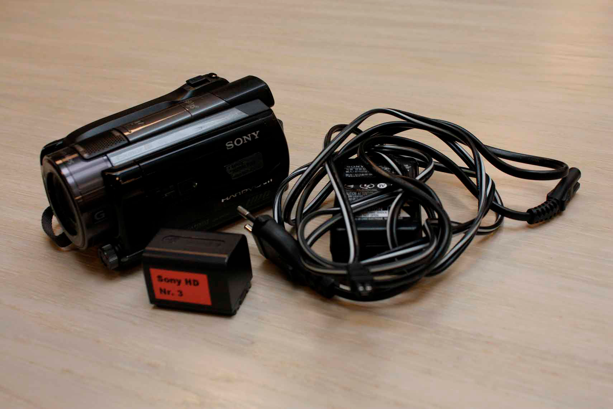

- Telefon: 7228 6000
- Email: info@eaaa.dk
- Åbningstider:
- Mandag - torsdag: 09-16
- Fredag: 09-14
Nikon 80D - spejlrefleks
Autofokus-funktionen er ekstremt hurtig i det nye kamera Canon EOS 80D. Du får skarpe billeder i kassen næsten hver gang, også når du skal fange en pludseligt opstået situation, (16 GB)
Canon EOS M10 – spejlløst systemkamera med video
Dette Canon EOS M10 kompakt systemkamera har ydelse som et DSLR-kamera i et kompakt, let design med spejlfri (mirrorless) teknologi. (max 29 min. video ad gangen) (64GB)
Sony Alpha a6000 – spejlløst systemkamera med video
Dette funktionspakkede, spejlløse kamera sikrer en billedkvalitet og resultater. Kameraet er perfekt for passionerede rejsende eller blot alle, der ønsker at indfange hverdagens små øjeblikke. (max 29 min. video ad gangen) (64 GB)